CFMoto 650 Adventura — 3,000-Mile Top-End Service
Tank off, new air filter, airbox cleaned, throttle bodies inspected, and the stock plugs swapped for NGK iridiums. Written from the photos of a 2022 model, step by step.

Tools
- Hex keys / hex bits (a multi-tool works for the shroud bolts)
- Metric sockets and ratchet
- Phillips screwdriver (airbox lid and base)
- 16 mm thin-wall spark plug socket with a universal joint or swivel
- Torque wrench (small range, in N·m)
- Pliers for spring hose clamps
- Clean rags, zip-lock bags, masking tape and a marker
- Throttle body cleaner (optional)
Parts and specs
| Spark plugs (×2) | NGK CR8EIX iridium |
|---|---|
| Stock plug removed | Torch CR8EI-series |
| Plug gap | 0.7–0.8 mm (per the engine sticker; confirm in your manual) |
| Plug torque | About 10–12 N·m (7–9 lb·ft) for a 10 mm plug |
| Air filter | OEM panel filter (airbox marked 0700-111000) |
Specs are typical values; your service manual has the final word.
Before you start. Work on a cold engine, outdoors or in a well-ventilated space, with no flames or sparks nearby. You'll be disconnecting a fuel line, so running the tank low beforehand makes the tank lighter and reduces spillage.
1. Remove the seat and disconnect the battery
- Remove the rider and passenger seats to expose the battery and the rear of the tank.
- Disconnect the negative (−) terminal first, then tuck the cable away so it can't touch the post.
- You can leave the positive terminal connected, but cover it with its red boot.


2. Remove the tank shrouds
- Remove the hex bolts holding each silver side shroud. Each bolt passes through a rubber grommet with a metal collar and washers; keep that stack together in the order it came out.
- Work the shroud free of its clips gently. The inside tabs break easily if you pull straight out, so ease each one off.
- Bag and label the hardware for each side.


The grey foam blocks stuck to the tank are anti-rattle pads for the shrouds. Leave them in place, and replace any that fall off, or the shrouds will buzz.
3. Disconnect fuel line, pump connector, and hoses
- Lift the rear of the tank slightly and prop it on a rag or block so you can reach underneath. Keep a rag under the fuel fitting.
- Release the fuel line quick-connector from the pump outlet (the white nipple under the tank). Squeeze the release tabs and pull it straight off; don't twist or pry. A little fuel will drip out.
- Unplug the fuel pump electrical connector by pressing its locking tab.
- Remove the vent and drain hoses. Slide the spring clamps back with pliers and pull the hoses off.
- Photograph or tape-label the hose routing before you pull anything, especially where the hoses run down the side of the engine.
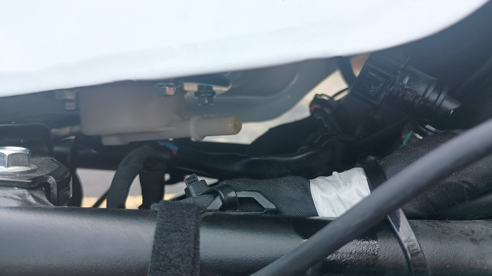
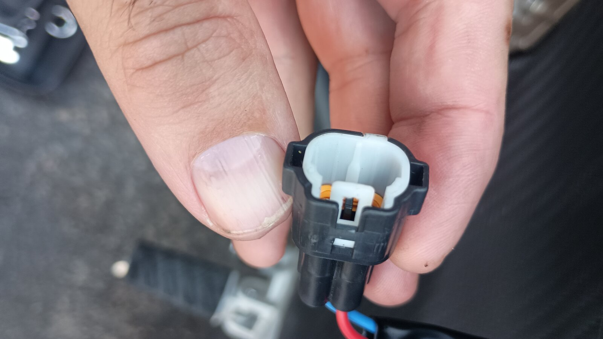
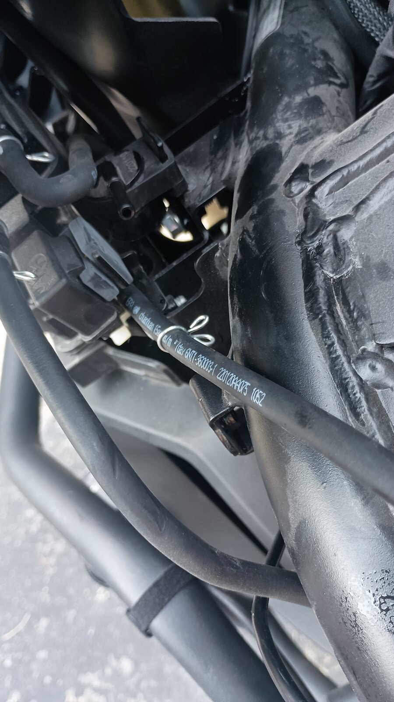
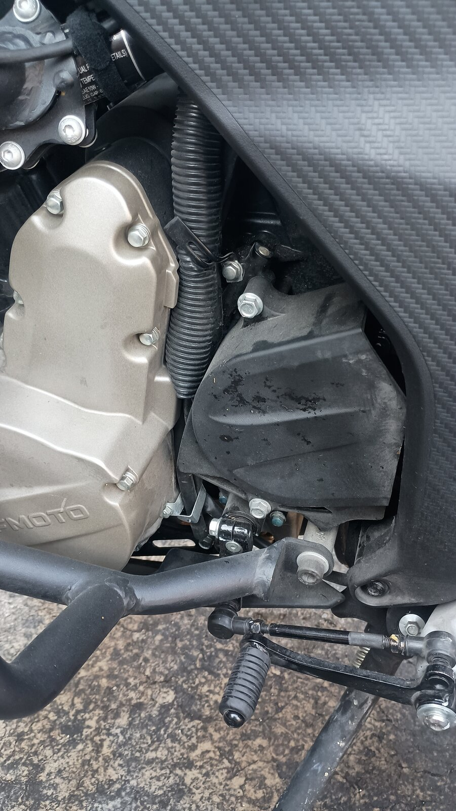
Fuel. Cap or plug the open fuel line with a clean plug or a taped plastic bag so dirt can't get in and fuel can't leak out.
4. Lift the tank off
- With everything disconnected, lift the tank up and back, checking for anything still attached.
- Set it on a soft surface, like a folded towel, so the paint and the pump flange underneath stay protected.
5. Replace the air filter
- Remove the Phillips screws around the airbox lid and lift the lid off.
- Lift out the filter. Note which way it faces: the foam side faces up, toward the lid, and the wire mesh side faces down.
- Check the old filter. Light dust, lint and a little plant debris is normal wear for 3,000 miles.
- Wipe the filter seat so the new filter's gasket seals all the way around.
- Fit the new filter in the same orientation and make sure its edge sits fully in the groove with no gaps.
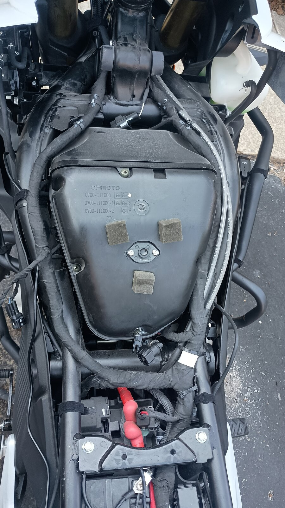
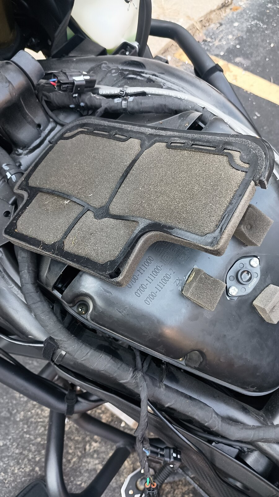
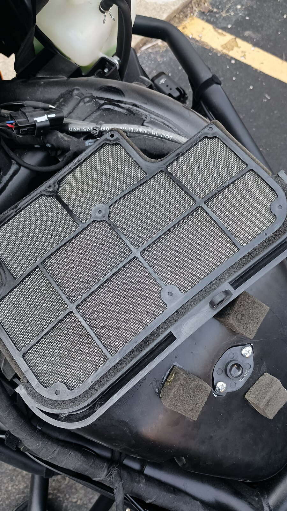
6. Clean the airbox
- Remove the airbox screws and lift the base off the throttle bodies. Loosen the boot clamps first if yours are clamped.
- Wipe out dust and debris with a damp rag. Check both velocity stacks and the rubber intake boots for cracks or splits.
- Check the airbox drain at the bottom for trapped oil or water.
- Let everything dry completely before reinstalling. Make sure no rag fibers are left in the stacks.
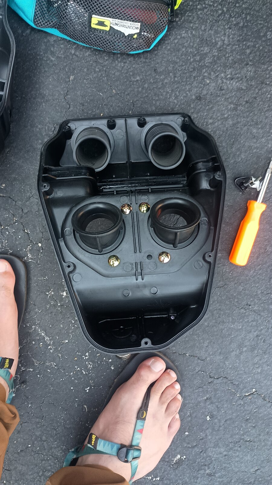
7. Inspect the throttle bodies
- Look into each bore. Mine were clean, with bright bores and no heavy carbon or oily film on the butterflies.
- Twist the throttle and watch both butterflies. They should open smoothly and snap closed together.
- If there's a light varnish, spray throttle body cleaner onto a rag (not into the bore) and wipe gently. Keep cleaner away from the sensors on the side of the body.
- Check the vacuum hoses and sensor connectors for cracks and a secure fit.
- When you're done looking, plug both bores with clean rags while you work on the plugs.
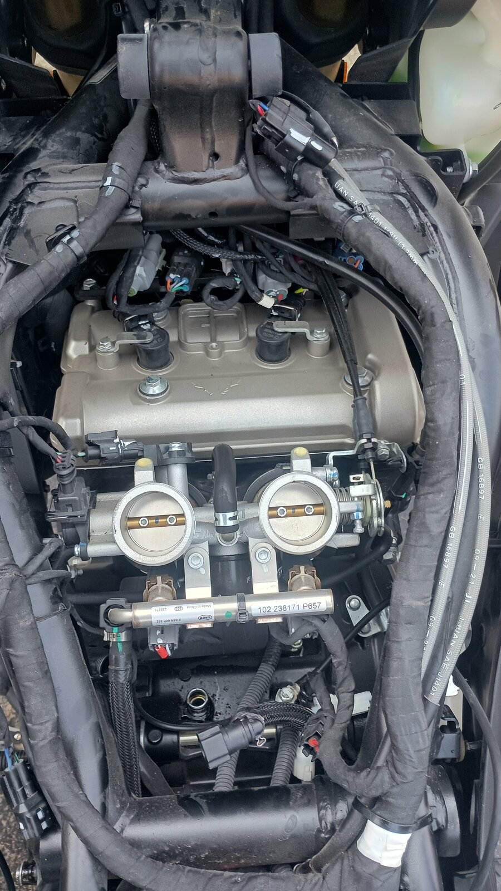
Don't force the butterflies open by hand or pry on the linkage. The idle stop screw and sync are set at the factory.
8. Remove the ignition coils and old plugs
- Blow or vacuum the area around each coil before removing it, so grit can't fall into the cylinder.
- Unplug each coil connector: pull back the wire retainer clip, then press the tab.
- Remove the small bolt holding each coil's bracket and pull the coil straight up.
- Remove each plug with the 16 mm plug socket plus a universal joint or swivel. The frame tube sits right over the cylinder head, so a straight extension won't fit.
- Read the old plugs. Mine showed a light tan-grey insulator and even electrode wear, which means healthy combustion with no fouling or signs of running lean.
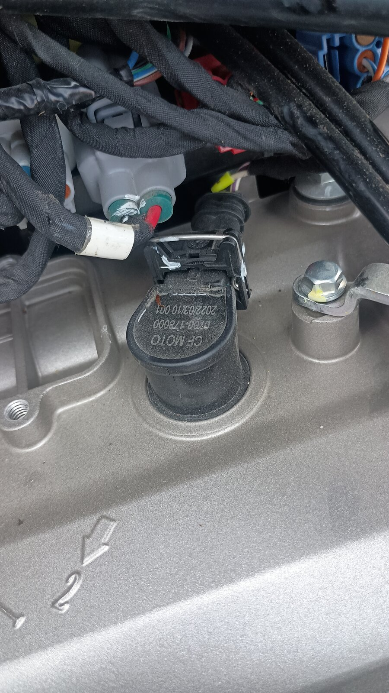
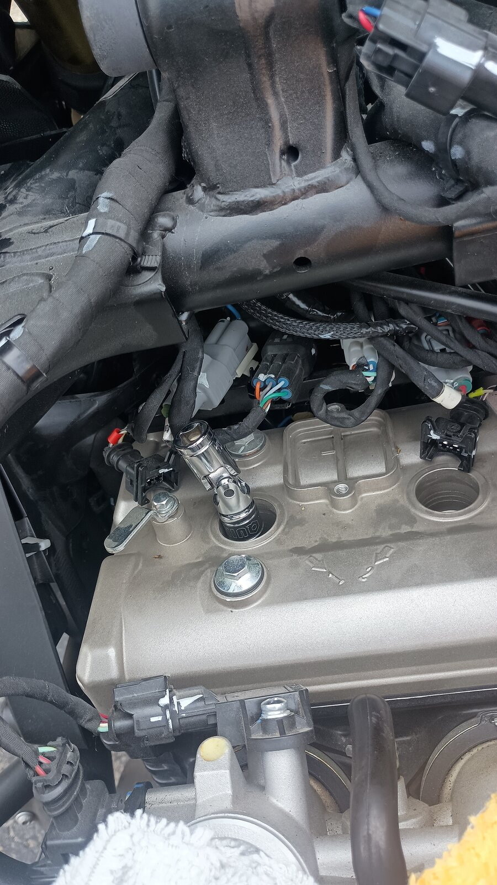
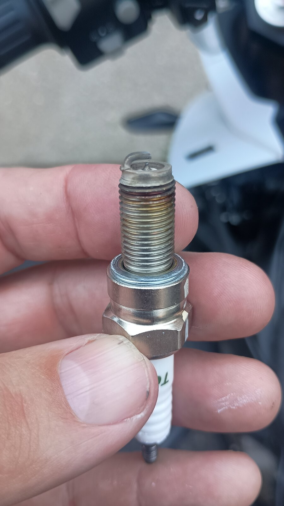
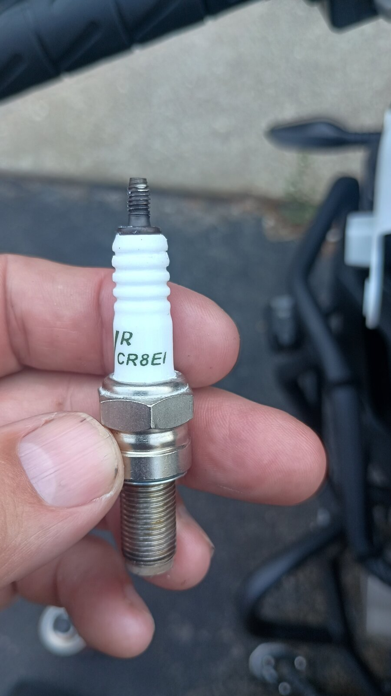
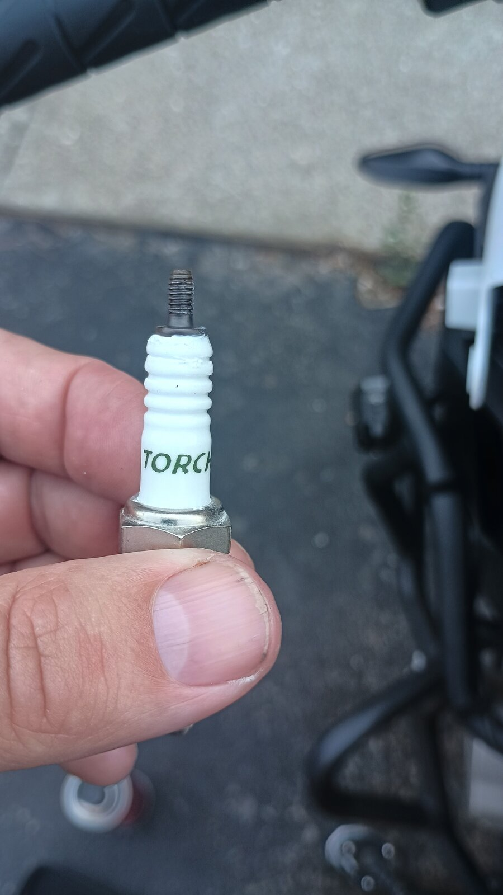
9. Install the NGK iridium plugs
- Check the gap with a wire gauge only. NGK iridiums come pre-gapped. If you must adjust, bend only the ground strap and never touch or lever against the fine iridium center tip.
- Thread each plug in by hand using the socket and U-joint, or a short piece of rubber hose. It should spin freely several turns. If it binds, back it out and start again.
- Torque to about 10–12 N·m. These are small 10 mm plugs going into an aluminum head, so don't guess by feel.
- Refit the coils. Push each one down until it seats on the plug terminal, then install the bracket bolts and reconnect the connectors until the retainer clip locks.
Don't cross-thread. Stripped plug threads in the head mean an expensive repair. No anti-seize is needed on NGK's plated plugs, and it changes the effective torque if you use it.
10. Reassemble in reverse order
Here's the checklist I ran through:
- ☐ Rags removed from both throttle body bores
- ☐ Airbox base seated on both throttle bodies, boots fully on, clamps tight, all screws in
- ☐ New filter seated in its groove, lid screwed down evenly
- ☐ Both coils seated, bracket bolts in, connectors clicked and wire clips locked
- ☐ Tank lowered without pinching any wires or hoses underneath
- ☐ Fuel quick-connector pushed on until it clicks, then tugged to confirm it's locked
- ☐ Fuel pump connector plugged in and latched
- ☐ Vent and drain hoses on, spring clamps positioned, routing matches the photos
- ☐ Rear tank bolts in with bushings and collars
- ☐ Shroud foam pads in place, shrouds clipped in, grommet and washer stacks correct
- ☐ Battery negative reconnected last, then seats back on
11. First start
- Turn the key on without starting, and let the fuel pump prime for a few seconds. Do this two or three times.
- Look and sniff at the fuel connection under the tank. There should be no drips and no strong fuel smell.
- Start the engine. It may crank a moment longer than usual while the rail refills.
- Let it idle and listen for a steady idle, and check the dash for warning lights. A check-engine light usually means a sensor or coil connector isn't fully clicked in.
- Take a short test ride, then recheck for leaks and shroud rattles.
Specs listed are typical values for this bike and plug. Confirm plug gap, torque figures and filter part number against your CFMoto service manual or dealer.